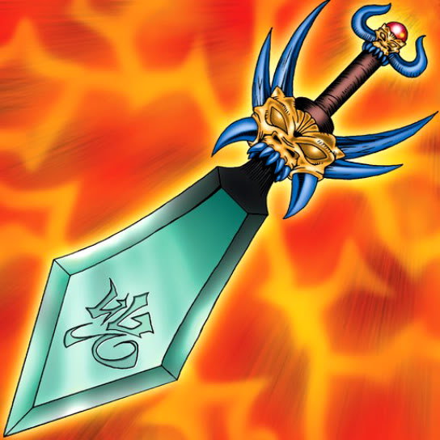

Fiend Sword

STATS
ATK: 1400
DEF: 800DECK COST
Deck Cost per Card: 22Fusion List (11 Possible Fusions)
- Fiend Sword + Ancient Jar = Tiger Axe
- Fiend Sword + Corroding Shark = Armored Zombie
- Fiend Sword + Crawling Dragon #2 = Sword Arm of Dragon
- Fiend Sword + Fire Reaper = Armored Zombie
- Fiend Sword + Firegrass = Flame Swordsman
- Fiend Sword + Fireyarou = Flame Swordsman
- Fiend Sword + Flame Ghost = Armored Zombie
- Fiend Sword + Flame Snake = Flame Swordsman
- Fiend Sword + Kagemusha of the Blue Flame = Flame Swordsman
- Fiend Sword + Skull Servant = Armored Zombie
- Fiend Sword + The Wandering Doomed = Armored Zombie